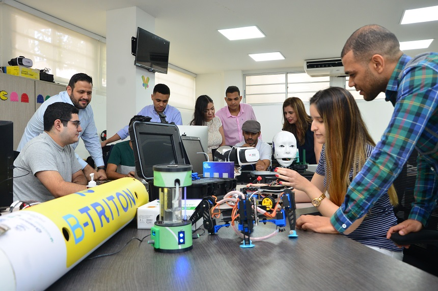

¿Quiénes somos?

Somos el Centro de Crecimiento Empresarial e Innovación de la Universidad Simón Bolívar; buscamos potenciar emprendimientos y empresas a partir de la tecnología y la innovación, siendo ágiles, cálidos y flexibles. Generamos nuevas capacidades para el crecimiento sostenible de empresas, mediante un modelo de co-creación y experimentación científica, tecnológica y de innovación.
¡Nuestra filosofía: Hacer las cosas bien!
La creación de una cultura emprendedora e innovadora, con la construcción de comunidades de usuarios y colaboradores en la que emprendedores, empresarios y mentores intercambian capacidades y conocimientos La innovación abierta, donde se propicia la cocreación, el trabajo colaborativo y experimental, en un proceso que va más allá del acompañamiento a ideas, generando vínculos entre emprendedores, empresarios, mentores y asesores, propiciando de esta forma oportunidades para el desarrollo de proyectos innovadores de gran impacto. La generación de capacidades emprendedoras e innovadoras, basadas en transformación y potencialización del conocimiento. El desarrollo integral. No solo contribuimos a transformar empresas, sino también personas.